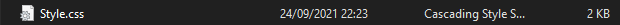
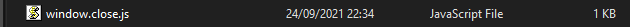

HTML Alapok
Weboldal Szerkeztők (Kattints arra amelyik tetszik):
Kiterjesztések:


Segítséget nyújtó YouTube videó
A kezdet
Türelem rózsát terem...
Nemfogunk percek alatt megtanulni egy jó weboldalt létrehozni, sőt ha igazán magas szintre akarunk eljutni hetek vagy hónapok során kerülhetünk arra a szintre. Próbáljunk meg türelmesek lenni és nem az első "Error" után ráütni az alt-f4re. Sok szerencsét és kitartást kívánok. Ha bármi kérdésed lenne az elérhetőségem az
első oldalon
található.
-A weboldal készítője